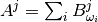
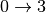
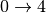
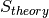
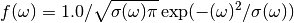

The purpose of this document is to explain the link between theoretical and experimental  and to
describe the general idea how theoretical S from ab-initio is calculated by available plugins in Mantid.
and to
describe the general idea how theoretical S from ab-initio is calculated by available plugins in Mantid.
During an inelastic neutron scattering experiment sample is exposed to neutron flux and response of a sample in the form of dynamical structure factor is recorded. In principle, one obtains phonon (vibrational) spectrum which is often quite difficult to analyse. In order to better understand experimental results one can use modeling methods. One of the most successful theoretical method in predicting phonon spectrum is ab-initio method DFT [1].

Usual approach in calculating phonon spectra within DFT is presented in the figure above. First, one defines initial
guess for the structure in interest. The initial guess should be as close as possible to an experimental structure.
Then, one optimise structure within DFT. By optimising structure one should understand finding the closest to the
initial guess local minimum of energy within accuracy of DFT method. At the closest minimum there
should be no effective force on atoms. For that structure the dynamical matrix, e.g, second derivative of system Hamiltonian with respect to
atomic displacements is calculated. Eigenvectors obtained from diagonalisation of this matrix are atomic displacements
and eigenvalues are squared frequencies of vibrations. Those vibrations are sometime called modes or fundamentals.
Using atomic displacements and frequencies obtained by DFT method one can calculate theoretical .
is calculated for each atom separately. Total S is sum over all partial atomic contributions.

From DFT calculations one usually obtains phonon data for infinite single crystal (there are ways to perform calculations for molecule, e.g, gas phase). In order to compare it with experiment in which sample is in the form of powder one has to perform powder averaging. Usually semi-empirical formula is used [2], [3]:

where  and
and  are tensors created from atomic displacements in the following way:
are tensors created from atomic displacements in the following way:


with
 – momentum transfer which occurs during neutron scattering. In principle, momentum transfer
– momentum transfer which occurs during neutron scattering. In principle, momentum transfer  is a vector but due to powder averaging S for the powder case depends on length of
is a vector but due to powder averaging S for the powder case depends on length of
 – semi-empirical parameter calculated as:
– semi-empirical parameter calculated as: 
 – trace operation
– trace operation
 – tensor contraction operation
– tensor contraction operation
 – indicates -th atoms
– indicates -th atoms
 – indicates -th energy transition
– indicates -th energy transition
 – frequency for -th transition in
– frequency for -th transition in  (called also mode or fundamental)
(called also mode or fundamental)
 – atomic displacement for -th atom and -th frequency in atomic units
– atomic displacement for -th atom and -th frequency in atomic units
 – mass of -th atom in atomic units
– mass of -th atom in atomic units
 –
–  expressed in spectroscopic units
expressed in spectroscopic units
 – Boltzmann constant
– Boltzmann constant
 – temperature in K
– temperature in K
 – cross-section for -th atom
– cross-section for -th atom
The formula above is valid for first order quantum events, e. g., transitions  for each phonon. In order to
reconstruct spectrum one has to also consider higher order quantum events. For second order quantum event one should
consider transitions
for each phonon. In order to
reconstruct spectrum one has to also consider higher order quantum events. For second order quantum event one should
consider transitions  , but also simultaneous transitions ,
, but also simultaneous transitions ,  for different phonons. Within harmonic approximation all second
order transitions form the following set:
for different phonons. Within harmonic approximation all second
order transitions form the following set:  .
Cardinality of this set is
.
Cardinality of this set is  , where
, where  is a number of fundamentals. In practice one can reduce this number by taking into consideration realistic energy window
and neglecting those
is a number of fundamentals. In practice one can reduce this number by taking into consideration realistic energy window
and neglecting those  for which
for which  is negligible.
Within harmonic approximation each phonon is treated as independent harmonic quantum oscillator. The formula for
is negligible.
Within harmonic approximation each phonon is treated as independent harmonic quantum oscillator. The formula for  is as follows [4]:
is as follows [4]:

where:

 – is a constant,
– is a constant,  if
if  and
and  otherwise
otherwise
Similarly one can define contribution for the third quantum order event (, simultaneous , ,  for different oscillators ,etc.. ) [4]:
for different oscillators ,etc.. ) [4]:

Usually in order to reconstruct experimental spectrum it is enough to give contribution up to fourth order ( , simultaneous , , ,  for different oscillators, etc.) [4]:
for different oscillators, etc.) [4]:

In the similar way as for the second quantum order event one can reduce number of energy transitions by taking into account considered energy window and neglecting small S.
After evaluating equations above one obtains discrete S for each quantum order and for each atom:  . In order to compare such a spectrum with an experimental spectrum one has to convolve it with experimental resolution:
. In order to compare such a spectrum with an experimental spectrum one has to convolve it with experimental resolution:

where:
– indicates -th atoms
 – indicates -order event
– indicates -order event
 – resolution function
– resolution function
 – it is theoretical S which can be compared with experimental results
For Tosca and Tosca-like instruments has the following form:

where:

with , , as constants.
Moreover, in case of Tosca and Tosca-like instruments length of momentum transfer depends on frequency (indirect geometry spectrometer).
The formula for  is as follows:
is as follows:

where:
 expressed in the spectroscopic units
expressed in the spectroscopic units

with
 – final energy on the crystal analyser in
– final energy on the crystal analyser in
 – cosines of crystal analyser angle in radians
– cosines of crystal analyser angle in radians
Calculation of theoretical S from ab-initio results is implemented in Abins. At the moment Abins supports CASTEP and CRYSTAL DFT programs. As it comes to instruments, Tosca and Tosca-like instruments are supported.
If Abins is used as part of your data analysis routines, please cite the relevant reference [5].
| [1] |
|
| [2] |
|
| [3] |
|
| [4] |
|
| [5] |
|
Category: Concepts